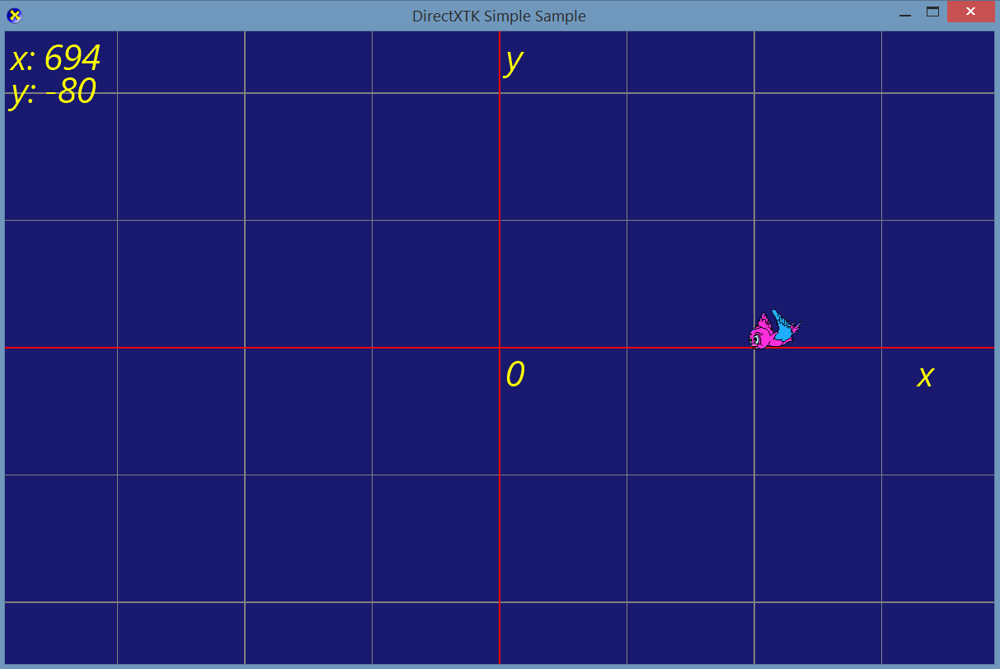
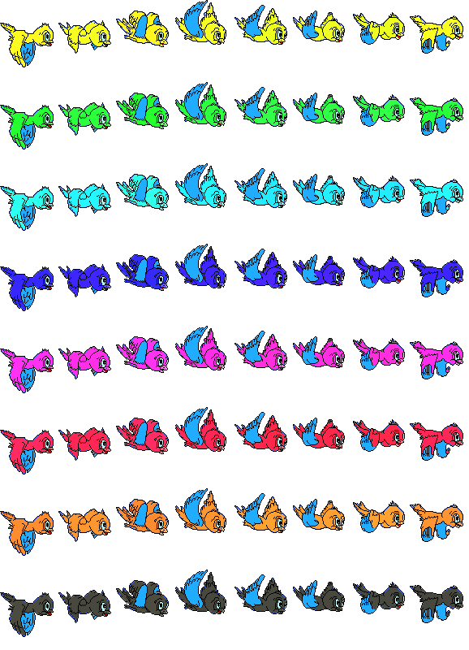
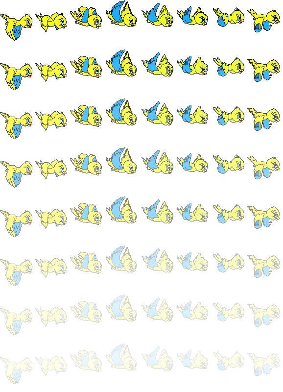

COMP 2501 - Winter 2014 Tutorial #9
Sprite Sheets with Row, Columns and Transparency in DirectX
Description:
The purpose of this tutorial is to give you practice using sprite sheets with both multiple rows and columns of frames and images that contain graduated transparency. You will also get practice doing sub-classing in C++. In this tutorial we will adjust the frames being displayed to make an object (flying bird) fade completely to invisible and then fade back in.
To get credit for the tutorial you must complete, or make significant progress, on the problems provided and demonstrate your results to the tutorial TA. If you cannot complete the tutorial in the time allotted you may demonstrate the completed results to the TA during their office hours.
The code for this tutorial is an adapted version of the DirectXTK Simple Sample.
Instructions:
Overview
Run the project. It should open a window that looks like the following with the bird flying around the screen. As the bird flies around the screen it changes colors with each complete cycle of wing flaps. This is to confirm that we are cycling through all the rows of the sprite sheet. The sheet being used is shown below -use it to help you with debugging because the color of the bird shows you which row of the sprite sheet you are currently displaying.

The flying bird with changing colors is based on the following sprite sheet that is being cycled through in the Sprite class' Draw() method: This sheet has 8 rows and 8 columns, each row is a different color to help with debugging code that is meant to cycle through the sprite sheet.

Problem 1)
Locate the place in the SimpleSample class where the multi-colored sprite sheet is being loaded. Replace this line of code with one that loads the content from the birdSheetWithTransparency image asset instead. This sprite sheet is based on 8 rows and 8 columns and the bird is more transparent in each row as shown below. [A word of caution to avoid confusion: Among the tutorial files there are two versions of these sprite sheets, ones with a transparent background which are used in the code ones with a white background. The ones with the white background are just used for this web page description of the tutorial.]

Re-run the code and you should see the yellow bird fading and then reappearing as it flies instead of changing colors as in the demo code. Unfortunately there are two problems. 1)The yellow bird does not completely fade to invisible -we would like that to happen. Second the yellow bird goes from being fully faded to suddenly being fully opaque again. We would like instead for it to fade back in at the same speed as it faded out. In the following problems we will fix that.
Problem 2)
Fading to completely invisible.
We are going to modify the code so that the bird actually displays a pretend 9'th row of "invisible" birds so the flying bird will appear completely invisible for one full "wing flap cycle". However, we do not want to alter the general behaviour of all Sprite objects, like the arrow for example. So we are going to create a subclass of Sprite called FadingBirdSprite in which we can customize the Update() and Draw() methods specifically for fading birds.
Right click on the "SimpleSample" project in the solution explorer and choose Add/Class... On the next screen simply click Add and give your class the name FadingBirdSprite (the .h and .cpp filenames will be autogenerated). Enter Sprite as the Base class. Press Finish.
Once this is done you should have new FadingBirdSprite.h and FadingBirdSprite.cpp classes. Open the FadingBirdSprite.h file and examine the bit of code that has been written for you. It should look something like the following.
#pragma once
#include "sprite.h"
class FadingBirdSprite : public Sprite
{
public:
FadingBirdSprite(void);
~FadingBirdSprite(void);
};
Modify the code to include the prototypes for the constructors and Update() and Draw() which we will be overriding in the .cpp file.
#pragma once
#include "sprite.h"
class FadingBirdSprite :
public Sprite
{
public:
FadingBirdSprite(ID3D11Resource* spriteSheetResource, ID3D11ShaderResourceView* spriteSheet,int numColumns, int numRows, int anAnimationFrameRate, XMFLOAT2 aLocation, XMFLOAT2 aVelocity);
~FadingBirdSprite(void);
public:
void Update(float gameTime, RECT clientBounds);
void Draw(SpriteBatch* spriteBatch, float gameTime);
};
Replace the contents of FadingBirdSprite.cpp with the following:
#include "FadingBirdSprite.h"
FadingBirdSprite::FadingBirdSprite(ID3D11Resource* spriteSheetResource, ID3D11ShaderResourceView* spriteSheet,
int numColumns, int numRows, int anAnimationFrameRate, XMFLOAT2 aLocation, XMFLOAT2 aVelocity)
: Sprite(spriteSheetResource, spriteSheet, numColumns, numRows, anAnimationFrameRate, aLocation, aVelocity)
{
}
FadingBirdSprite::~FadingBirdSprite(void)
{
}
void FadingBirdSprite::Update(float gameTime, RECT clientBounds)
{
}
void FadingBirdSprite::Draw(SpriteBatch* spriteBatch, float gameTime)
{
}
Notice the base class constructor is invoked with the initializer list that starts with the ":".
In SimpleSample.cpp add this to the includes at the top of the file:
#include "FadingBirdSprite.h"
Then change this line:
// Create new Sprite
g_Sprite = new Sprite(g_pTextureBirdSheetRes, g_pTextureBirdSheet, 8, 8, 10, XMFLOAT2(560, 330), XMFLOAT2(0.20, 0));
To this:
// Create new Sprite
g_Sprite = new FadingBirdSprite(g_pTextureBirdSheetRes, g_pTextureBirdSheet, 8, 8, 10, XMFLOAT2(560, 330), XMFLOAT2(0.20, 0));
You should now be able to run the code and your bird object will now be an instance ofFadingBirdSprite rather than Sprite. The behaviour of the code will not be different yet, but we can now customize the Update() and Draw() methods of the FadingBirdSprite class. First though, we have to specify in the base class (Sprite) that we'd like to allow Update() and Draw() to be overridden. Open Sprite.h and replace this:
void Update(float gameTime, RECT clientBounds);
void Draw(SpriteBatch* spriteBatch, float gameTime);
With this:
virtual void Update(float gameTime, RECT clientBounds);
virtual void Draw(SpriteBatch* spriteBatch, float gameTime);
The virtual keyword tells the program that, if this method exists in the subclass, use that version instead. If you run your code now, you will notice that you won't see the bird at all. This is because we haven't written any behaviour in our overridden Update() and Draw() methods yet.
Now go ahead and modify the code in these two methods so that the bird remains invisible for a full "wing flap" cycle. Here is a suggestion: have your code go through 9 rows instead of 8 and on the 9th row don't draw anything. Or, "don't draw" the frames of the 8th row. Try both approaches an see which looks best. If you try the "9th row" approach you could easily add more invisible rows and make the bird invisible longer.
Problem 3)
A problem still remains. The bird goes from being fully transparent to fully opaque too abruptly. We want it to fade back in as gently as it faded out. To do this modify the Update() and Draw()method again so that once the bird has faded it re-appears by "playing the rows backwards". That is, cycle through the rows of the sprite sheet images and when you get to the bottom, invisible row, start back up from the bottom to the top. So if you are using the "9th row" approach for problem 1 your the rows would be drawn in the order 0,1,2,...7,8,7,6...2,1,0 and then the cycle would repeat. The effect should be that the bird fades out and then fades back in at the same rate.
When you have completed the above problems show your results to the TA to get credit for the tutorial.